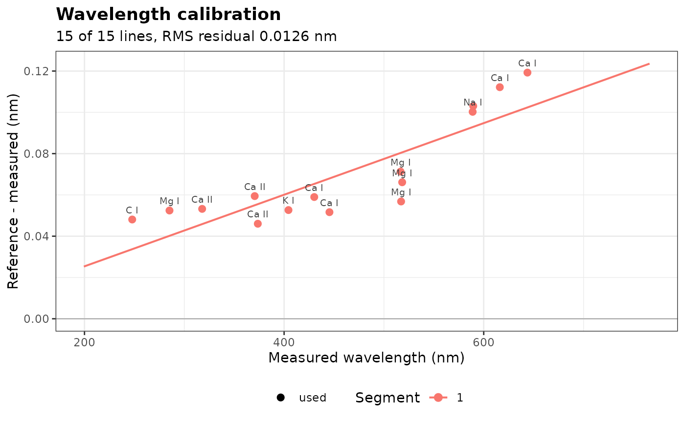

Wavelength Calibration from Reference Lines
Source:R/wavelength_calibration.R
wavelength_calibration.RdMeasures the positions of known emission lines in spectra and fits a
correction of the wavelength axis, so that the lines fall at their
reference wavelengths (for example, from the NIST Atomic Spectra
Database). apply_calibration() then relabels the wavelengths of the
spectra, without changing their intensities.
Usage
wavelength_calibration(
spectra,
lines,
degree = 1,
search = 0.3,
min_snr = 20,
segments = TRUE,
reject = TRUE
)Arguments
- spectra
The spectra: a numeric vector named by wavelength, or a matrix or data frame with one spectrum per row and the wavelengths as column names (other columns are ignored). The lines are located in their mean.
- lines
The reference lines: a numeric vector of wavelengths (nm), preferably named, or a data frame with a
wavelengthcolumn (and optionally aspeciescolumn), such as returned bynist_lines(). Choose isolated, strong but not saturated lines, spread over the range.- degree
The degree of the correction polynomial: 0 (shift), 1 (default) or 2.
- search
The half-width of the window in which each line is searched, in nm. Default is 0.3.
- min_snr
The minimum height of a line, in units of the noise of the spectrum. Default is 20.
- segments
A logical: fit each detector segment separately (
TRUE, default).- reject
A logical: remove the outlying lines after the fit (
TRUE, default).
Value
An object of class specproc_wavelength_calibration, a list with
lines: a tibble with, for each reference line, itslinelabel,referenceandmeasuredwavelengths, theoffset(reference minus measured), itssegment,snr, whether it wasused(otherwise thereason), thecorrectionof the fit at the line and theresidual;segments: a tibble with, for each segment, its wavelength range (from,to), thedegreefitted, the number of linesn_linesand the root mean square residualrmse(nm);wavelength: the wavelengths of the calibrated axis, in column order.
Use apply_calibration() to correct spectra,
predict() to correct any
wavelength, and plot_wavelength_calibration() to draw the fit.
Details
The lines are located in the mean of the spectra. For each reference
line, the peak is the channel of highest intensity within search nm of
the reference wavelength, and its position is refined to a fraction of a
channel by the vertex of the parabola through the logarithms of the peak
channel and its two neighbors, above the lowest channel of the window
(Gaussian interpolation, exact for Gaussian lines; Caruana et al., 1986).
A line is not used when
"edge": the highest channel is at the border of the search window (the peak is not in the window, or a stronger line is nearby);"weak": its height above the lowest channel of the window is less thanmin_snrtimes the noise of the spectrum;"flat": three channels or more are within 1% of its maximum, or its curvature is not that of a peak, as for saturated or strongly self-absorbed lines;"outlier": its residual after the fit exceeds 3 robust standard deviations of the residuals (for example, a blend, or a line identified wrongly), whenreject = TRUE.
The correction is a polynomial of degree degree of the measured
wavelength, \(\lambda_{true} = \lambda + \sum_{j=0}^{d} c_j (\lambda -
\lambda_0)^j\), where \(\lambda_0\) is the mean position of the lines: a
constant shift for degree = 0, linear for degree = 1 (default). It
needs at least degree + 1 usable lines, and more to estimate its
residual error. Beyond the range of the lines, the polynomial is
extrapolated: spread the reference lines over the spectral range, and
prefer low degrees.
Instruments made of several spectrometers have one wavelength
calibration per detector. With segments = TRUE (default), the axis is
split where the wavelengths step back (overlapping detectors) or jump
(gaps of more than 5 times the median channel spacing), and each segment
gets its own correction. A segment with fewer usable lines than
degree + 1 gets a constant shift if it has one line, and no correction
otherwise, with a warning.
References
Caruana, R.A., Searle, R.B., Heller, T., Shupack, S.I. (1986). Fast algorithm for the resolution of spectra. Analytical Chemistry, 58(6):1162-1167.
Examples
# the first detector (199 to 766 nm) of the forage spectra
data(forageLIBS)
spectra <- forageLIBS[-(1:14)]
wl <- as.numeric(names(spectra))
first_detector <- spectra[seq_len(which(diff(wl) < 0)[1])]
reference <- c(`C I` = 247.856, `Mg I` = 285.213, `Ca II` = 317.933, `Ca II` = 370.603,
`Ca II` = 373.690, `K I` = 404.414, `Ca I` = 430.253, `Ca I` = 445.478,
`Mg I` = 516.732, `Mg I` = 517.268, `Mg I` = 518.360, `Na I` = 588.995,
`Na I` = 589.592, `Ca I` = 616.217, `Ca I` = 643.907)
cal <- wavelength_calibration(first_detector, reference)
cal
#> Wavelength calibration (degree 1): 15 of 15 reference lines used
#>
#> segment from to degree n_lines rmse
#> 1 199.3772 766.1501 1 15 0.0136
plot_wavelength_calibration(cal)

corrected <- apply_calibration(first_detector, cal)
head(names(corrected))
#> [1] "199.4025" "199.4897" "199.5770" "199.6643" "199.7515" "199.8388"